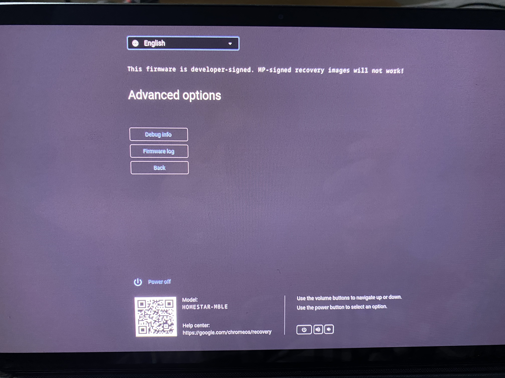
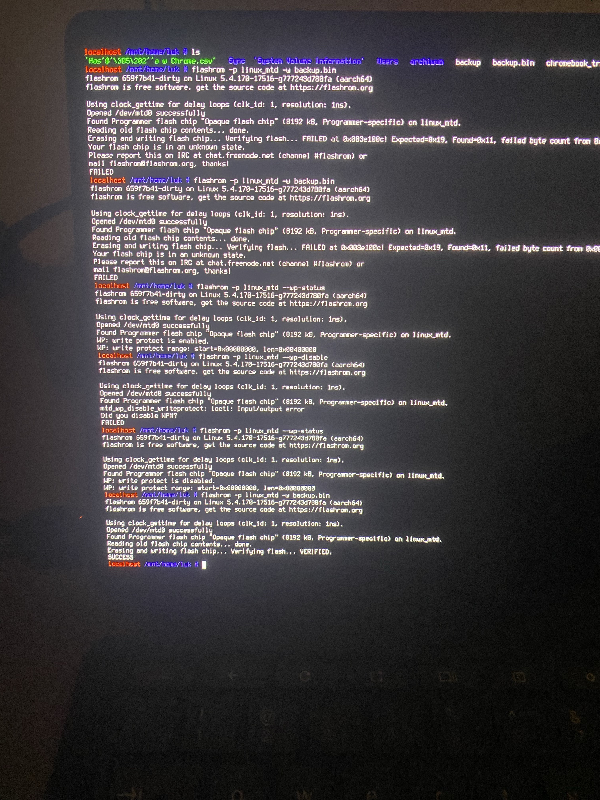
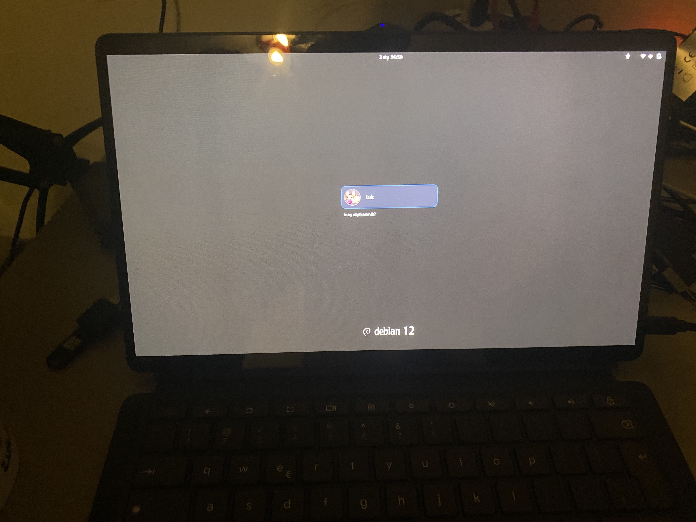

(this is not a solution, look below)

chromebooks with developer mode enabled (which is needed to boot non-chromeos)
have a big warning screen which for some might as well not exist
based on chrome os documentation if we are able to generate key pair in
we might also create some universal key (with known private key) everyone (who wants to) can set as recovery key so if they frick up their install they can use our debian image as recovery
which means we could drop the modifying background shenanigans and use our system like a normal system
if you think that sound to goot to be true you are right
unless you are okay with losing your device

it will royally frick ur machine
as it turend out it's not as simple as swapping gbb key. we would also need to sign the already present firmware with them. Other wise you will

i have two homestars (v3) and (v4) (it's likely not a good idea to exchange firmware between them) so i'm like double doomed since i have to manually extract my gbb backup from the oryginal one which doesn't have support for btrfs (while running sh1mmer)
have to dump 200gb fs into slow hdd
in order to open it on a diffrent device and get my gbb backup

true nightmare fuel
make sure to always disable software write protection

but my beloved is back

not a great way to spend weekend
well there is in theory
if and only if someone firgures out the make_dev_firmware.sh script and makes it work on debian
we might be able to actually perform that operation safely
but right now i am too traumatized to do it
i wish luck to anyone who would want to attempt that